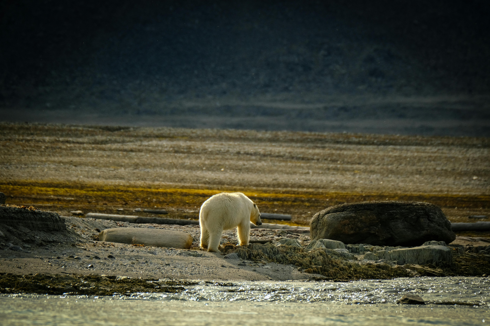
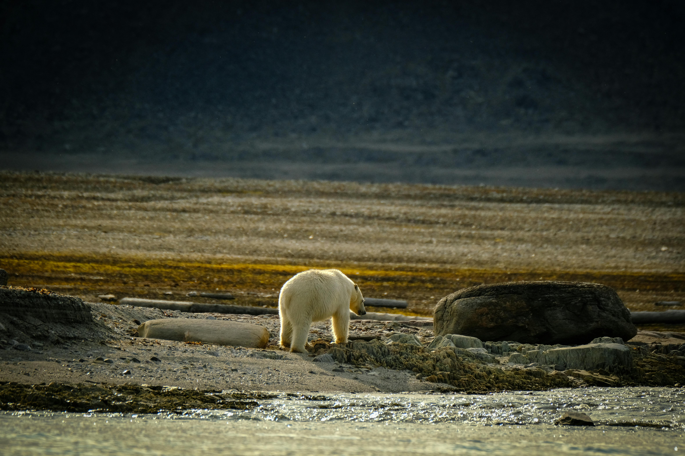

Natural selection can exist only if there is variation among individuals in a population and the variation is heritable; selection will then bring about change in the traits in the successive generations. Variation can also be non-genetic, for example, a person with better nutrition being taller. However, this does not really have any relevance in the evolutionary process.
In general terms, an adaptation can be defined as an innate characteristic possessed by an organism that ensures its functionality and capability of reproducing in a given ecosystem. Fitness subjected to changes results from Genotypes that make changes or remain constant in order to meet the needs of the population as it is found in its environment. For instance, there were changes in the beak of finches in relation to the food resources available to them.
An adaptation is different from an acclimation which only is a temporary change of the phenotype of an organism because of some changing conditions of the environment. For example, a dog in a hot environment will have more of a smooth skin but more skin pigment in a cold environment. This adaptation is known to be short-term and does not form a favorable gene pool for the next generations.
A reaction will therefore be more favorable depending on the environment in which it exists. A trait beneficial in one set of conditions may be disadvantageous in another, as seen with finches: big beaks available in one area while small beaks were suitable in another area in the same environment hence, stabilizing prices was difficult.

 

MUTATION
A mutation is a change in the DNA sequence of an organism, which can occur naturally or due to environmental factors. These alterations can lead to variations in the genetic code, potentially causing changes in an organism's traits or functions.
Mutation is a source of variation, new alleles in the populations, and therefore it results in an increase in variation among individuals in the population. Mutations are changes in the DNA sequence of the gene and are inherited in it. A person with a mutated gene might be different from other members of the population in the sense that they have a different gene from the other members of the population. However, this is not always the case, so it is essential to brush up a bit on the basics to build on these foundational concepts. A mutation can have one of three outcomes on the organisms’ appearance (or phenotype): A mutation can have one of three outcomes on the organisms’ appearance (or phenotype):
A negative mutation on the other hand changes the phenotype of the animal in such a way that it has less
fitness—low probability of survival and therefore produces lesser offspring.
A positive mutation results in a new survival advantage that changes the phenotype of the organism.
Mutations are also categorized according to their impact on the fitness of an organism, and for many cases, the mutations will not impact the fitness in any way.
Mutation thus only alters the rate of evolution slightly because it only adjusts the quantity of frequency of the alleles in the population slightly. A mutation may occur and lead to an allele that is of a disadvantage to an individual or beneficial or in between. It is mentioned that group A changes get eliminated from the population by selection and in general they will exist within a population only in a very low frequency equal to the mutation rate. In selection, beneficial mutations beneficial to the species will spread in the population though the rate of spread at the beginning is slow. This way, one knows whether or not a given mutation actually aids an organism in surviving to sexual maturity and thereby having the capability to reproduce. As mentioned above, mutation serves as the primary mechanism of genetic variation in all population substructures—new alleles and consequently, new genetic variations are produced through this process. Resistance to antibiotics due to mutations in bacteria is another issue that cropped up in the field of medicine. One of the general properties of bacteria is their ability to replicate quickly, meaning that mutations may increase at a fast pace. This can enable the bacteria to adapt to the antibiotic drugs and even develop some resistance.
Thus, genetic drift can also be influenced by some negative impact and can be escalated in case of natural and man-made disasters, for instance, natural or artificial failure when only a few population members are killed; according to the bottleneck effect, this point is commented with a big portion of the genome might be obliterated at once. This happens in one go, while the survivors’ genes become the genes that the entire population, that is, millions and tens of millions of people: are very different from the pre-disaster gene pool. The disaster has to be one that kills and it cannot do so because of the organism’s characteristics; it can be a hurricane, lava flow, etc. Thus, mass killing resulting from low temperatures at night is likely to have different outcomes regarding the number of alleles particular individuals have that enable them to survive cold temperatures.
GENETIC DRIFT
Genetic drift is a mechanism of evolution that causes random changes in the frequency of alleles in a population, particularly in small populations. This process can lead to significant genetic variation over time, independent of natural selection.
Genetic drift is a random change in allele frequencies within a population. It reduces genetic variation, and its impact is more significant in small populations. If a population were infinitely large, genetic drift would not occur, but all real populations are finite. Genetic drift happens because the offspring generation is a random sample of the parent population's alleles. Factors like individual deaths, partner choice, and gamete fertilization contribute to this randomness.
In small populations, the loss of even a single individual can significantly impact allele frequencies. For example, in a population of ten animals, losing one animal means losing 10% of the gene pool, whereas in a population of 100 animals, losing one is just a 1% loss. Random events like natural disasters can cause these shifts, impacting allele frequencies differently depending on the traits of the survivors.
For instance, if a population starts with an equal number of two alleles, the next generation's allele distribution will vary randomly. Over time, one allele might become fixed (present in all individuals), and the other lost. This stochastic process is more evident in small populations and when allele frequencies are not balanced.
Genetic drift can be intensified by events like population bottlenecks, where a large portion of the population is randomly killed, leaving a genetically different group of survivors. Another example is the founder effect, where a small group migrates and establishes a new population with different allele frequencies than the original population. This effect is seen in the Afrikaner population of South Africa, where certain genetic disorders are more prevalent due to the higher frequency of mutations in the founding colonists.


GENE FLOW
Gene flow is the movement of genes between populations, typically through the migration of individuals. It can introduce new genetic variation into a population and promote genetic diversity within species.